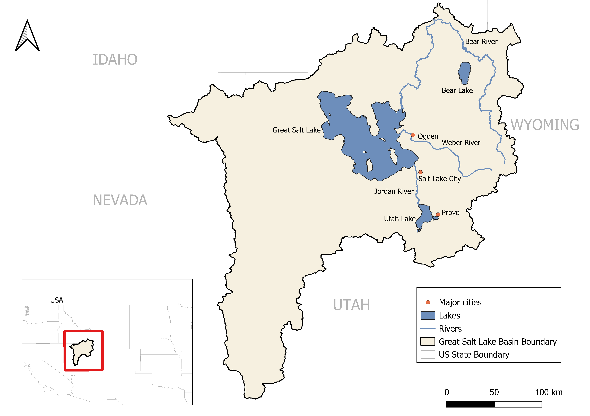
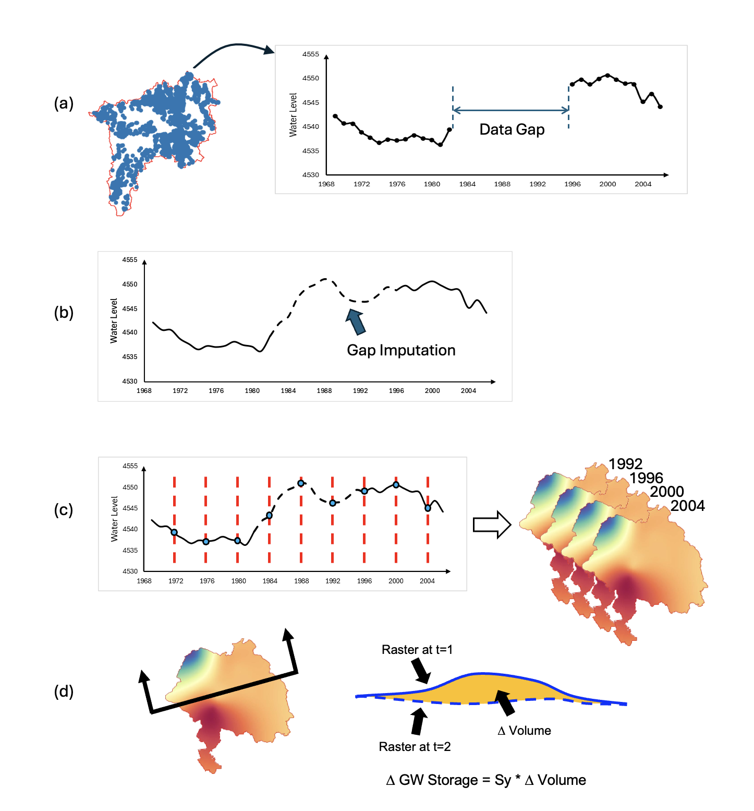
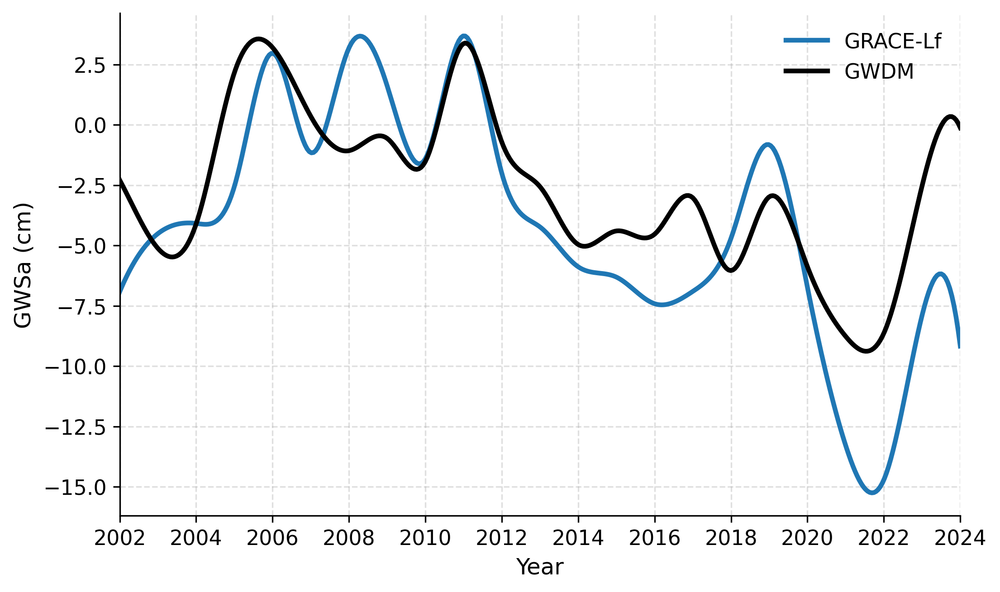
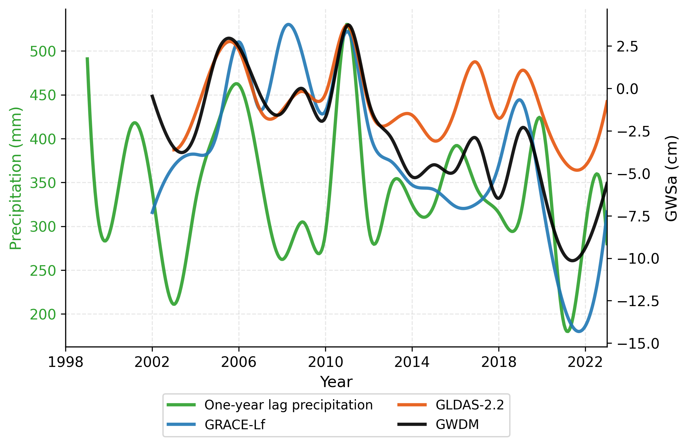
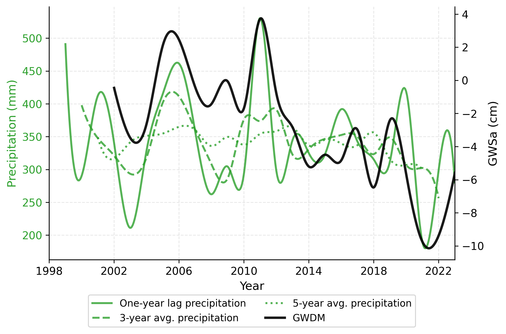

Research Seminar
Reconciling satellite gravimetry, land-surface modeling,
and in-situ wells
Henok Teklu¹ · Norman L. Jones¹* · Gustavious P. Williams¹ · Robert B. Sowby¹ · Jake Serago²
¹ Dept. of Civil & Construction Engineering, Brigham Young University · ² Utah Division of Water Resources
* corresponding author
The setting
Groundwater pumping is concentrated along the Wasatch Front (Ogden, Salt Lake City, Provo)

Great Salt Lake Basin study area: rivers, lakes, and major cities
The setting · hydrogeology
Hydrogeologic setting, annotated on the study-area map
The question
GRACE / GRACE-FO twin satellites measure the basin's total water mass
GRACEGLDAS-2.2 (Catchment LSM) simulates the terrestrial water balance for each grid cell and assimilates GRACE observations
GLDAS≈1,200 USGS monitoring wells measure water levels directly in the aquifer
wellsThree estimates with independent data and independent error structures.
Agreement among them is therefore meaningful.
Twin satellites ~220 km apart measure micron-level changes in their separation as gravity, and therefore water mass, varies beneath them. (The 3-D view is unavailable on this display.)
Method 1 · satellite gravimetry
The complication
From total storage to groundwater
GWSa = TWSa − snow − soil − canopy − surface water
Anomaly = departure from a reference: every series is expressed relative to its own 2004–2009 average (the GRACE convention). Zero marks that baseline — positive is wetter than the 2004–2009 mean, negative is drier.
Method 2 · land-surface modeling
Modeled water-balance cells over the basin; GRACE observations assimilated into the simulated storage
Method 3 · in-situ · GWDM

Method 3 · workflow detail
The pipeline is applied identically in every year, so its assumptions enter all years of the in-situ series alike.
GWDM pipeline: (a) gapped record → (b) imputation → (c) kriged annual rasters → (d) volumetric differencing
The comparison set
Annual GWSa by method, 2002–2024 · GRACE-Lf, GLDAS-2.2 and GWDM traced from the paper's figures · GRACE-sw = GRACE-Lf ÷ Lf
Results · the record
GRACE-raw annual GWSa (cm) · shaded: drawdown intervals 2012–2016 & 2019–2022
Results · satellite vs. wells
GRACE↔wells correlation: 0.17 → 0.77 after Lf correction

Results · model vs. wells
GLDAS-2.2 is the Catchment Land Surface Model run that assimilates GRACE observations and provides an explicit groundwater storage variable at higher spatial resolution than GRACE itself.
Satellite, model, and wells describe a consistent history:
drawdown 2012–2016, partial recovery, drawdown 2019–2022.

Results · drought-interval loss
−0.0 km³
This study · groundwater lost 2011–2016
(GRACE-Lf)
−10.9 ± 2.8 km³
Independent check · GPS crustal-loading inversion
(Young et al., 2021)
Two physically unrelated measurements, satellite gravimetry and
GPS-observed crustal loading, agree on the magnitude of the loss.
Results · climate response
The wells put the lag at one to two years (r = 0.59 and 0.60 — a statistical tie) and correlate most strongly with the three-year rainfall average (r = 0.67) — recharge integrates multi-year climate.

Implications for management
Correlations peak at one- to two-year lags: the wells at r = 0.59 and 0.60 (one and two years); the satellite at one year (r = 0.42).
A dry year signals reduced recharge over the next one to two years, before declines register in wells — pumping and allocation can be adjusted in advance.
Inter-drought recovery has been partial: 2011–2016 alone removed ≈10.1 km³, and the anomaly reached −8.7 cm in 2022.
Limitations
ELM accuracy declines beyond ~3-year gaps; predictions drift toward the climatological mean as gaps lengthen.
0%
Roughly half of wells with usable records contain gaps exceeding three years, and a majority of the gap-years fall in the drought years of greatest interest.
Sy · 300km
A single specific yield (0.15) and GRACE's coarse footprint leave absolute volumes uncertain even where the timing agrees.
Future work: an uncertainty analysis — alternative leakage factors, baseline periods, and storage parameters — to bound the reported trends and volumes.
Takeaways
1In a ~93,000 km² basin, leakage correction is decisive: r = 0.17 → 0.77
2Corrected satellite, model, and wells converge; drought loss ≈ 10.1 km³, corroborated by GPS (10.9 ± 2.8)
3Groundwater follows precipitation with a lag of one to two years
4The limiting factor is the well record itself; an imputation method for multi-year gaps is a priority for future work
5With Lf calibrated, scaled GRACE can serve as an ongoing storage estimate — subject to periodic re-validation against wells
Thank you
Teklu · Jones* · Williams · Sowby (BYU Civil & Construction Eng.) · Serago (Utah DWRe)